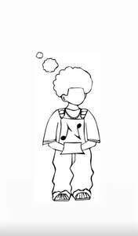

Trade Mark Journal No.2025/022 30 May 2025
UK00004203729 14 May 2025 (25,41)

- Class 25
- Clothing; Jackets [clothing]; Knitwear [clothing]; Ready-to-wear clothing; Woolen clothing; Furs [clothing]; Garments for protecting clothing; Layettes [clothing]; Linen clothing; Headbands [clothing]; Headbands for clothing; Gloves [clothing]; Gloves as clothing; Clothes; Aprons [clothing]; Kerchiefs [clothing]; Jerseys [clothing]; Denims [clothing]; Shorts [clothing]; Cashmere clothing; Capes (clothing); Clothing of leather; Leather (Clothing of -); Leather clothing; Collars [clothing]; Silk clothing; Parts of clothing, footwear and headgear; Knitted clothing; Hoods [clothing]; Windproof clothing; Corsets [clothing, foundation garments]; Wristbands [clothing]; Embroidered clothing; Belts for clothing; Belts [clothing]; Rainproof clothing; Waterproof clothing; Bandeaux [clothing]; Casual clothing; Visors [clothing]; Jackets being sports clothing; Jackets (Stuff -) [clothing]; Stuff jackets [clothing]; Clothing for leisure wear; Playsuits [clothing]; Bottoms [clothing]; Ready-made clothing; Trunks being clothing; Woven clothing; Drawers [clothing]; Drawers as clothing; Infant clothing; Leisure clothing; Athletic clothing; Ties [clothing]; Clothing for sports; Sports clothing; Clothing for children; Muffs [clothing]; Bodies [clothing]; Clothing for babies; Clothing for infants; Tops [clothing]; Weatherproof clothing; Clothing for cycling; Handwarmers [clothing]; Clothing for skiing; Fabric belts [clothing]; Beach clothing; Chaps (clothing); Thermal clothing; Cowls [clothing]; Men's clothing; Fishing clothing; Mitts [clothing]; Dance clothing; Braces for clothing; Clothing layettes; Water-resistant clothing.
- Class 41
- Music concerts; Recording of music; Music recording; Music publishing and music recording services; Music performances; Jazz music entertainment services; Production of music concerts; Music education; Presentation of music concerts; Live music concerts; Pop music concerts (Organisation of -); Performance of music; Music production; Production of music; Music concert services; Teaching of music; Music publishing; Publishing of music; Performance of music and singing; Organisation of music concerts; Production of sound and music recordings; Music festival services; Instruction in music; Music instruction; Performing of music and singing; Performance of dance, music and drama; Live music performances; Music entertainment services; Publication of music; Arranging of music performances; Music composition services; Direction of music performances; Organising of festivals relating to jazz music; Composition of music for others; Music composition for others; Music recording studio services; Live music services; Rental of phonographic and music recordings; Music mixing services; Production of music shows; Artistic management of music venues; Live music shows; Arranging of music shows; Music cassettes (Rental of -); Music library services; Music group services; Music performance services; Music production services; Publication of sheet music; Music publishing services; Provision of live music; Music transcription for others; Musical concerts by radio; Musical entertainment; Arranging and conducting of music concerts; Music competition services; Live musical concerts; Publication of music books; Music transcription services; Providing digital music from the internet; Entertainment in the nature of live performances by musical bands; Presentation of musical concerts; Musical concerts by television; Education and training in the field of music and entertainment; Selection and compilation of pre-recorded music for broadcasting by others; Sound recording and video entertainment services; Musical concert services; Entertainment in the form of recorded music (Services providing -); Arranging of musical entertainment; Entertainment in the nature of dance performances; Production of musical recordings; Entertainment in the nature of live dance performances; Entertainment; Theatre entertainment; Television entertainment; Cinema entertainment; Interactive entertainment; Entertainment services; Television entertainment services; Education, entertainment and sports; Sports entertainment services; Radio entertainment; Cabaret entertainment services; Musical entertainment services; Live entertainment; Tv entertainment services; Interactive entertainment services; Nightclub services [entertainment]; Entertainment information; Information (Entertainment -); On-line entertainment; Gaming services for entertainment purposes; Booking of entertainment; Entertainment services in the nature of arranging social entertainment events; Radio entertainment services; Popular entertainment services; Corporate entertainment services; Hospitality services (entertainment); Live entertainment services; Entertainment services in the nature of organizing social entertainment events; Cinematographic entertainment services; Corporate hospitality (entertainment); Audio entertainment services; Provision of musical entertainment; Entertainment club services; Club entertainment services; Club services [entertainment]; Video entertainment services; Provision of entertainment; Education, entertainment and sport services; Animated musical entertainment services; Television and radio entertainment services; Radio and television entertainment services; Entertainment in the nature of theater productions; Organising of entertainment; Artistic management of entertainment venues; Production of live entertainment; Entertainment services for children; Television and radio entertainment; Radio and television entertainment; Entertainment services in the form of cinema performances; Gaming machine entertainment services; Radio entertainment production; Entertainment in the nature of dinner theater productions; Entertainment, sporting and cultural activities; Online entertainment services; Organisation of musical entertainment; Services for the production of entertainment in the form of television; Production of television entertainment features; Live entertainment production services; Children's entertainment services; Online interactive entertainment; Entertainment in the nature of television news shows; Musical group entertainment services; Entertainment booking services; Production of audio entertainment; Lighting productions for entertainment purposes; Provision of live entertainment; Internet radio entertainment services; Entertainment information services; Booking of entertainment halls; Production of live entertainment events; Rental of entertainment halls; Laser show services [entertainment]; Arranging of visual entertainment; Video game entertainment services; Entertainment in the nature of circuses; Entertainment agency services; Live demonstrations for entertainment; Closed circuit television entertainment services; Entertainment services relating to sport; Entertainment services relating to esports; Social club services for entertainment purposes; Providing facilities for entertainment; Entertainment services in the nature of competitions; Hypnotist shows [entertainment]; Holiday centre entertainment services; Night club services [entertainment]; Entertainment services in the form of television programmes; Staged light entertainment services; Arranging of competitions for education or entertainment; Entertainment services in the nature of interactive television programmes; Provision of radio and television entertainment services; Arranging of festivals for entertainment purposes; Fan club services (entertainment); Entertainment services in the nature of contests; Entertainment services provided by television; Arranging of visual and musical entertainment; Exhibition services for entertainment purposes; Production of television entertainment programmes; Arranging of entertainment shows; Preparation of entertainment programmes for the cinema; Production of films for entertainment purposes; Organization of entertainment competitions; Entertainment services in the nature of an amusement park show; Entertainment services in the nature of sporting events; Organization of entertainment events; Entertainment services in the nature of video games; Production of live entertainment features; Provision of entertainment services through the media of television; Entertainment services in the form of concert performances; Road shows being entertainment services; Organization of competitions [education or entertainment]; Competitions (Organization of -) [education or entertainment]; Organization of competitions for education or entertainment; Organisation of entertainment services; Services providing entertainment in the form of live musical performances; Entertainment in the nature of fashion shows; Conducting of entertainment events; Entertainment in the form of live musical performances (Services providing -); Entertainment services for producing live shows; Film production for entertainment purposes; Production of live television programmes for entertainment; Festivals (Organisation of -) for entertainment purposes; Entertainment services in the nature of a wrestling club; Entertainment services sharing computer games; Organisation of outings for entertainment; Providing entertainment information; Entertainment in the form of television programmes (Services providing -); Presentation of live entertainment events; Escape game [entertainment]; Cultural, educational or entertainment services provided by art galleries; Entertainment services provided at nightclubs; Production of entertainment in the form of television programmes.
Jaydan Cameron Simpson
Nico Kadeem Golding